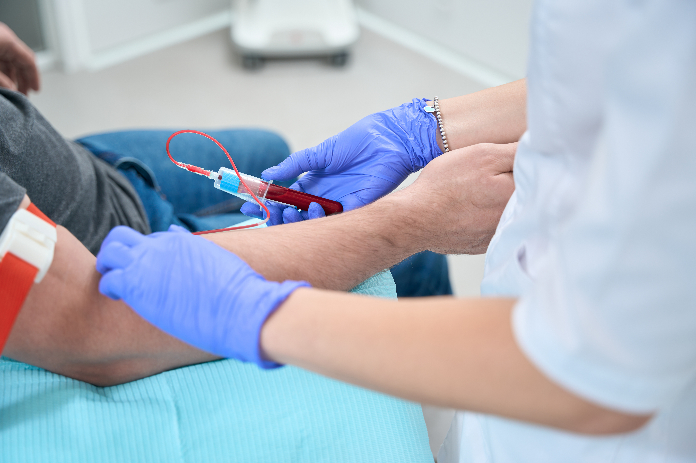
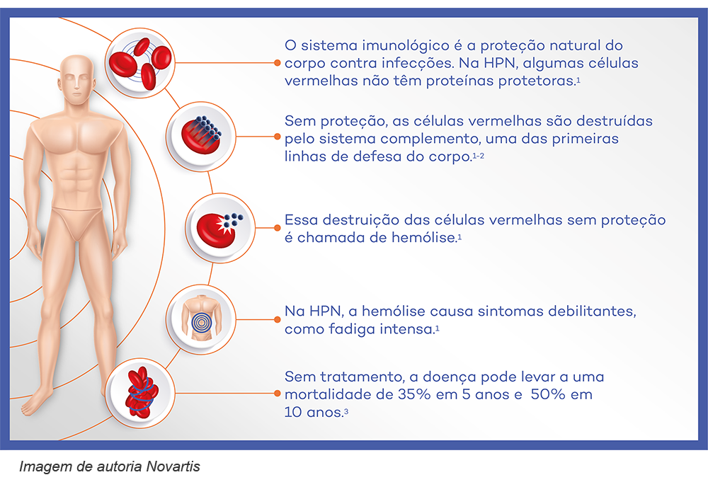
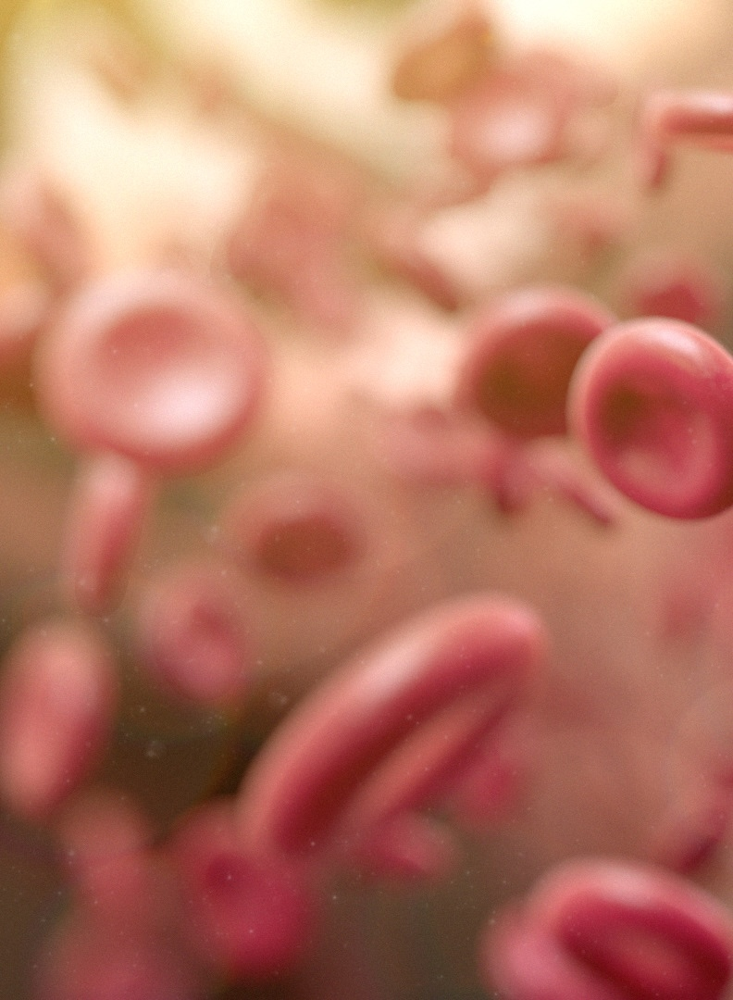
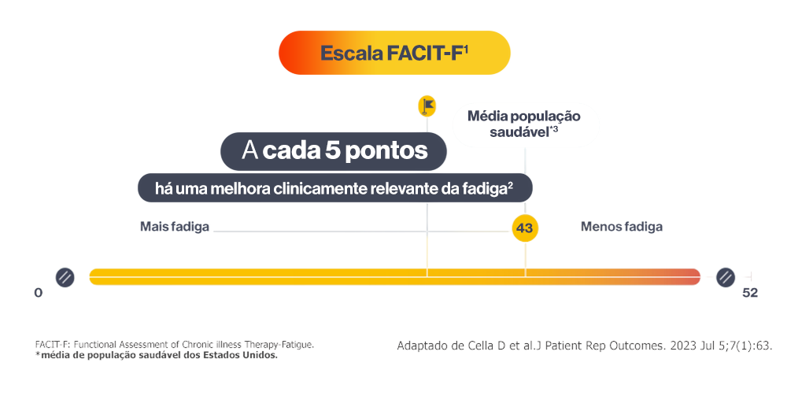

CID D59.5
Hemoglobinúria paroxística noturna (HPN)
Sintomas, hemólise, fadiga e qualidade de vida.
O que é a hemoglobinúria paroxística noturna?
A hemoglobinúria paroxística noturna (HPN) é uma doença ultrarrara do sangue. Na HPN, as células vermelhas do sangue, também chamadas de hemácias, tornam-se mais vulneráveis à destruição pelo sistema imunológico. Esse processo é chamado de hemólise e pode levar a manifestações como anemia e fadiga.1
A HPN pode se apresentar de maneiras diferentes entre as pessoas, tanto em relação aos sintomas quanto à intensidade com que eles aparecem. Por isso, acompanhar as mudanças ao longo do tempo é uma parte importante do cuidado.1

O que é hemólise?
Hemólise é o processo de destruição das células vermelhas do sangue. Na HPN, as hemácias perdem proteínas de superfície que ajudam a protegê-las da ação do sistema imunológico, ficando mais suscetíveis à destruição.1
Esse processo pode ocorrer dentro dos vasos sanguíneos, sendo chamado de hemólise intravascular, ou em órgãos como o baço e o fígado, caracterizando a hemólise extravascular.1
Quando a destruição das hemácias é aumentada, podem surgir alterações como redução da hemoglobina e anemia, além de sintomas capazes de interferir diretamente na rotina e no bem-estar.1
Quais sintomas podem ocorrer na HPN?
A HPN pode se manifestar de forma diferente em cada pessoa, e os sintomas podem variar em intensidade. Entre as manifestações descritas estão:1-3
Fadiga e cansaço intenso
Anemia persistente
Dor abdominal
Dificuldade para engolir
Episódios de urina escura
Necessidade de transfusões de sangue em algumas situações
A presença de hemólise pode ser um sinal de que a doença não está adequadamente controlada e pode estar associada a sintomas como fadiga, dores abdominais e necessidade de transfusões.1

Como a hemólise pode afetar a qualidade de vida?
Os efeitos da hemólise podem ultrapassar as alterações identificadas nos exames. Fadiga intensa, dores abdominais, anemia e necessidade de transfusões podem interferir em atividades cotidianas e afetar a qualidade de vida de quem convive com HPN.1-3
O impacto pode ser percebido no trabalho, na prática de exercícios e na convivência com amigos e familiares. Por isso, compreender os sintomas e comunicar mudanças à equipe de saúde ajuda a fornecer uma visão mais completa de como a doença está afetando a rotina.2,4
Fadiga: um sintoma importante na HPN
A fadiga é um dos sintomas mais comuns e relevantes da HPN e pode ser intensa e persistente. Diferentemente de um cansaço passageiro, ela pode afetar a disposição, a capacidade de realizar tarefas e diferentes dimensões da qualidade de vida.4,5
Avaliar a fadiga de maneira estruturada pode ajudar a compreender melhor sua intensidade e suas mudanças ao longo do tempo.4,5
Em uma análise de dados do Registro
Internacional de HPN,
~93% dos 423
pacientes avaliados
apresentavam fadiga.5
O FACIT-F (Functional Assessment of Chronic Illness Therapy - Fatigue) é um questionário utilizado para avaliar a fadiga e seu impacto no dia a dia.

Ele contém 13 perguntas relacionadas à experiência da pessoa nos últimos sete dias.4,5
A pontuação total varia de 0 a 52. Pontuações mais altas indicam menor fadiga, enquanto pontuações mais baixas indicam maior intensidade do sintoma.5
O FACIT-F foi validado em pessoas com HPN e considerado adequado para avaliar a fadiga associada à doença. Também pode ser utilizado para acompanhar mudanças no sintoma ao longo do tempo.4,5
Em uma análise realizada com dados do Registro Internacional de HPN, uma mudança de 5 pontos na escala FACIT-F foi considerada um valor adequado para representar uma mudança clinicamente importante na fadiga de uma pessoa com HPN.5
Esse tipo de acompanhamento permite observar não apenas uma pontuação isolada, mas também como a percepção de fadiga muda ao longo do tempo. A interpretação deve ser feita em conjunto com a avaliação clínica e com outros aspectos da doença.5
Como acompanhar a fadiga no dia a dia?
Ao responder ao FACIT-F, a pessoa considera como se sentiu durante os últimos sete dias. Registrar o resultado ao longo do tempo pode facilitar a identificação de mudanças e apoiar a conversa durante as consultas.5
Além da pontuação, é importante observar como o cansaço interfere em atividades como trabalhar, fazer exercícios, realizar tarefas domésticas e manter a vida social. Essas informações ajudam a mostrar o impacto da fadiga para além dos exames laboratoriais.2,4
Acesse o questionário aquiPor que monitorar os sintomas é importante?
A atenção aos sintomas é essencial para acompanhar a HPN. Mudanças na intensidade da fadiga, aparecimento de novas manifestações ou piora de sintomas já conhecidos devem ser comunicados ao médico.1
O acompanhamento regular permite reunir mais informações sobre como a doença está se manifestando e como ela interfere na rotina. Monitorar e relatar sintomas também pode contribuir para que os cuidados sejam ajustados de acordo com as necessidades de cada pessoa.2,3,6
Ferramentas estruturadas, como o FACIT-F, podem complementar essa conversa ao transformar a percepção de fadiga em uma medida que pode ser acompanhada ao longo do tempo.4,5
Convivendo com a HPN
Viver com HPN pode trazer desafios para a rotina. Compreender a doença, reconhecer os sintomas e manter uma comunicação aberta com o médico são passos importantes para que o acompanhamento considere tanto os aspectos clínicos quanto o impacto da doença na qualidade de vida.1,2
O acompanhamento deve ser contínuo. Relatar novos sintomas, pioras e mudanças na fadiga ajuda a equipe de saúde a entender como a HPN está se comportando ao longo do tempo e quais aspectos do cuidado precisam ser reavaliados.3,6
Artigos relacionados
Referências
1. Hill A, DeZern AE, Kinoshita T, Brodsky RA. Paroxysmal nocturnal haemoglobinuria. Nature Reviews Disease Primers. 2017;3:17028.
2. Bektas M, Copley-Merriman C, Khan S, Sarda SP, Shammo JM. Paroxysmal nocturnal hemoglobinuria: patient journey and burden of disease. Journal of Managed Care & Specialty Pharmacy. 2020;26(12-b Suppl):S8-S14. doi:10.18553/jmcp.2020.26.12-b.s8.
3. Dingli D, Matos JE, Lehrhaupt K, et al. The burden of illness in patients with paroxysmal nocturnal hemoglobinuria receiving treatment with the C5-inhibitors eculizumab or ravulizumab: results from a US patient survey. Annals of Hematology. 2022;101(2):251-263.
4. Weitz I, Meyers G, Lamy T, et al. Cross-sectional validation study of patient-reported outcomes in patients with paroxysmal nocturnal haemoglobinuria. Internal Medicine Journal. 2013;43(3):298-307. doi:10.1111/j.1445-5994.2012.02924.x.
5. Cella D, Johansson P, Ueda Y, et al. Clinically important change for the FACIT-Fatigue scale in paroxysmal nocturnal hemoglobinuria: a derivation from international PNH registry patient data. Journal of Patient-Reported Outcomes. 2023;7(1):63. doi:10.1186/s41687-023-00609-4.
6. Oliver M, Patriquin CJ. Paroxysmal Nocturnal Hemoglobinuria: Current Management, Unmet Needs, and Recommendations. Journal of Blood Medicine. 2023;14:613-628.
Material destinado ao público leigo. 2026 © Direitos Reservados Novartis Biociências S/A – Proibida a reprodução total ou parcial não autorizada. Atualizado em 21 de agosto de 2026.
BR-XXXXX